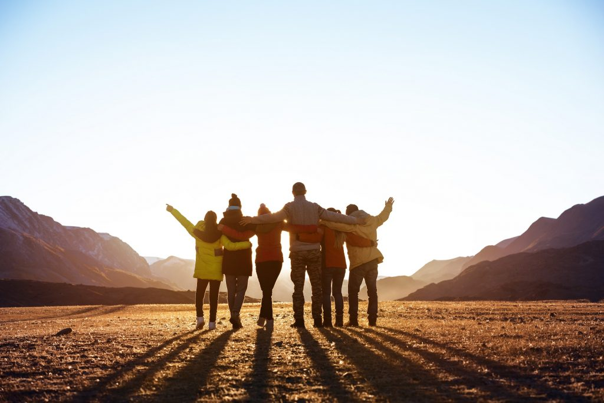

| Petrecerea timpului cu prietenii este pentru mine una dintre cele mai prețioase experiențe. Îmi place să ne adunăm împreună pentru a petrece momente de bucurie, împărtășind râsete, povești și experiențe de viață. Fie că organizăm o cină în casă sau o ieșire în oraș, momentele petrecute alături de prieteni sunt întotdeauna pline de energie pozitivă și conexiune profundă.
Un alt aspect important al relațiilor mele cu prietenii este capacitatea noastră de a ne ajuta reciproc. În momentele în care unul dintre noi are nevoie de sprijin, ceilalți sunt întotdeauna acolo să ofere o mână de ajutor. Ajutându-ne unii pe alții prin activități casnice sau prin împărtășirea sfaturilor și experiențelor noastre, consolidăm legăturile noastre și ne facem relația și mai solidă și mai profundă.
Pe lângă bucuria de a petrece timp cu prietenii și de a ne ajuta reciproc, îmi place să folosesc aceste momente pentru a învăța lucruri noi. Fie că este vorba de împărtășirea unor pasiuni comune sau de explorarea unor domenii de interes noi, petrecerea timpului cu prietenii este adesea o oportunitate de a descoperi și de a învăța lucruri noi. Fie că încercăm rețete noi în bucătărie, experimentăm activități sportive sau pur și simplu împărtășim cunoștințe și idei, fiecare întâlnire cu prietenii este un prilej de a crește și de a evolua împreună.
În concluzie, petrecerea timpului cu prietenii, ajutând prin casă și învățând lucruri noi sunt trei aspecte esențiale ale vieții mele sociale. Aceste experiențe îmi aduc nu doar bucurie și împlinire personală, ci și o conexiune profundă cu cei dragi și oportunități continue de creștere și dezvoltare personală. |
 |
 Alex Storceac
Alex Storceac Contacte
Contacte Index
Index Note si Medii
Note si Medii Orarul Lectiilor
Orarul Lectiilor